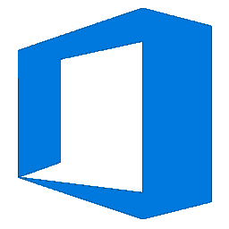
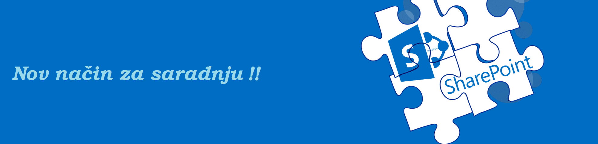
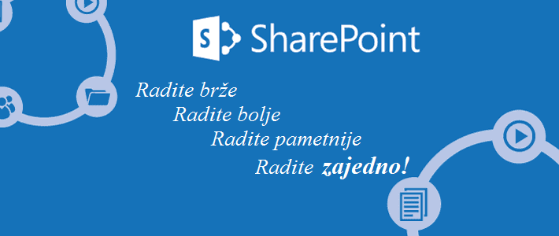
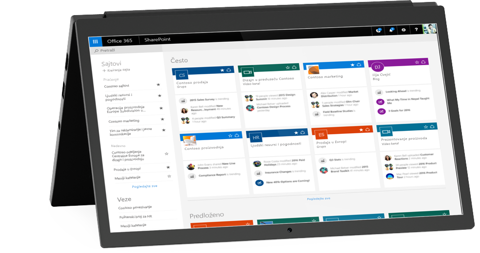
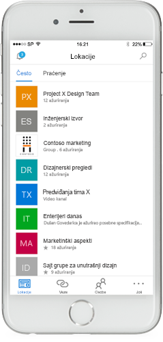

SharePoint
Uslovi poslovanja koji se stalno menjaju zahtevaju da budemo agilni, što znači da treba da ulažemo u rešenja koja pružaju pouzdanost i izbor. SharePoint daje fleksibilnost za prilagođavanje jedinstvenim poslovnim potrebama. SharePoint ima veliki broj korisnika koji neprestano raste, što otvara značajnu mogućnost za proširenje poslovanja. Bilo da ste integrator sistema ili nezavisni prodavac softvera, možete da proširite poslovanje kako biste razvili, primenili i podržali rešenja izgrađena pomoću jedne, proširive platforme za intranet, ekstranet i internet rešenja, lokalno i u oblaku. Predstavlja podsticanje timskog rada I omogućuje pojedincima, timovima i organizacijama da pametno otkrivaju i dele sadržaj, kao i da sarađuju na njemu sa bilo kog mesta i na bilo kom uređaju. Preduzeću omogućava da izgradi poslovna rešenja koja pružaju uvide, poboljšavaju odluke i povećavaju organizacionu agilnost. SharePoint se može kupiti u oblaku kao samostalna ponuda ili u sklopu Office 365 programskog paketa u kom možete da dobijete i pristup mnogobrojnim funkcijama.
MS SHAREPOINT ONLINE

Lako kreiranje sajtova tima za deljenje sadržaja, kao i saradnju na njemu sa kolegama u organizaciji i izvan nje sa bilo kog uređaja. Najbolji način da iskusite SharePoint Online jeste da ga koristite uz Office 365 plan koji obuhvata OneDrive for Business, Skype za posao Online i Exchange Online. Nešto više klikom na sledeće dugme.
VišeMS SHAREPOINT SERVER 2016
Unapređuje korisnički utisak pri radu i mogućnosti na osnovu inovacija u sistemu. Služi da modernizuje lokalnu infrastrukturu, poboljšava performanse, pouzdanost, prilagodljivost i istovremeno pruža osnovu za buduće inovacije. Pogledajte I saznajte ponešto o najnovijoj verziji SharePoint Servera.
VišeMS SHAREPOINT SERVER 2010
Takoreći jedan od pionira u MS SharePoint familiji. Predstavlja osnovu nad kojom je izgradjen MS SharePoint 2016. Server ima manju funkcionalnost od novijih verzija pa tako i zahteva manje resursa za njegovo funkcionisanje. Klikom na sledeće dugme saznajte nešto više o tome kako funkcioniše MS SharePoint 2010.
Više
Naš Plan
Naša glavna želja je da sadašnjim i budućim korisnicima omogućimo što jednostavnije korišćenje MS SharePoint-a uz pomoć naših objašnjenja kao i da predstavimo potencijalnim korisnicima svrhu aplikacije i omogućimo im da nauče nešto novo.
Naši Korisnici
SharePoint je sada, više nego ikad pre, čvorište za projektante, za izgradnju i primenu modernih aplikacija, kao i za dizajnere, za izradu privlačnih web sajtova. Pa tako u naše korisnike spadaju sve kompanije koje žele da povećaju organizacionu agilnost svojih radnika kao i projekata.

Nesmetana saradnja
|
 |
|  |
Pristup sa bilo kog mesta
|
Hibridno čuvanje podataka
|